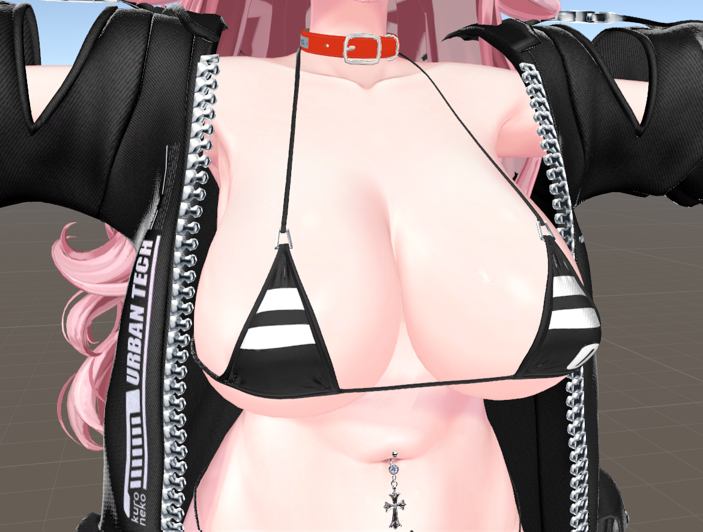
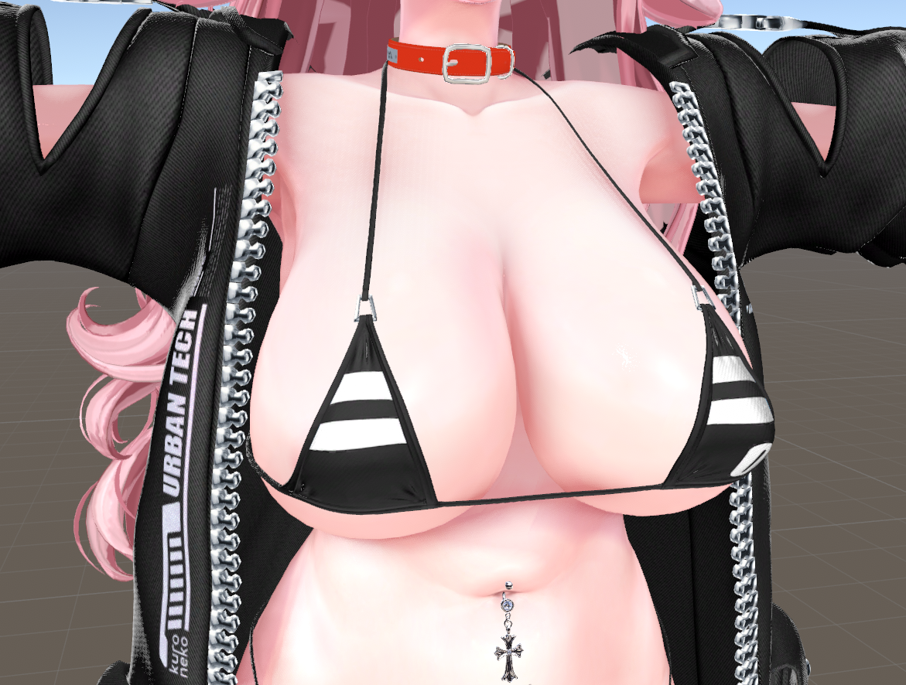
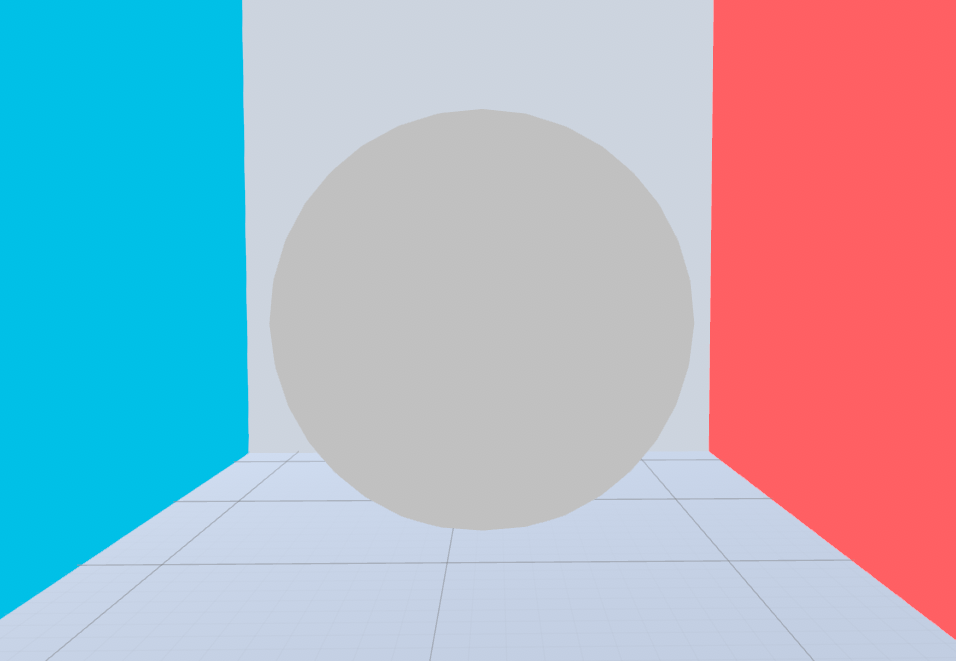
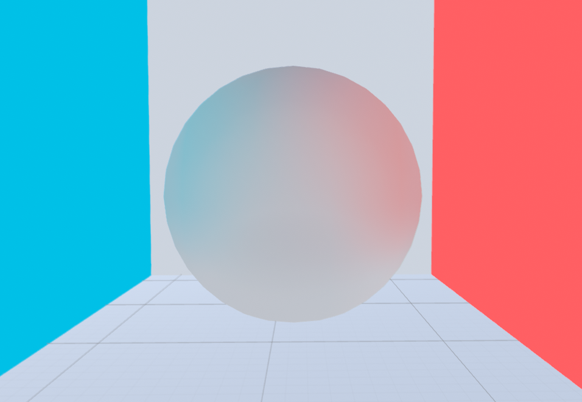
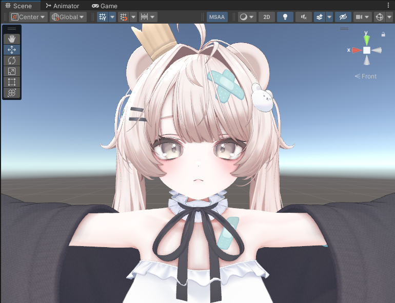
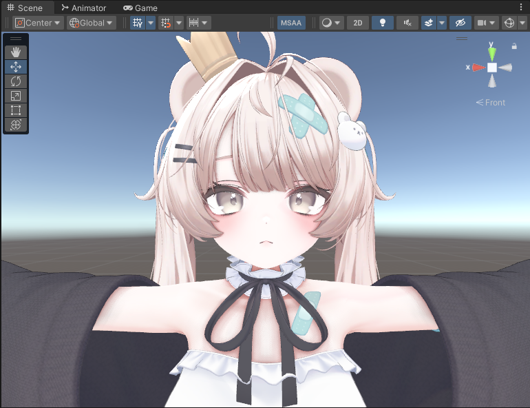
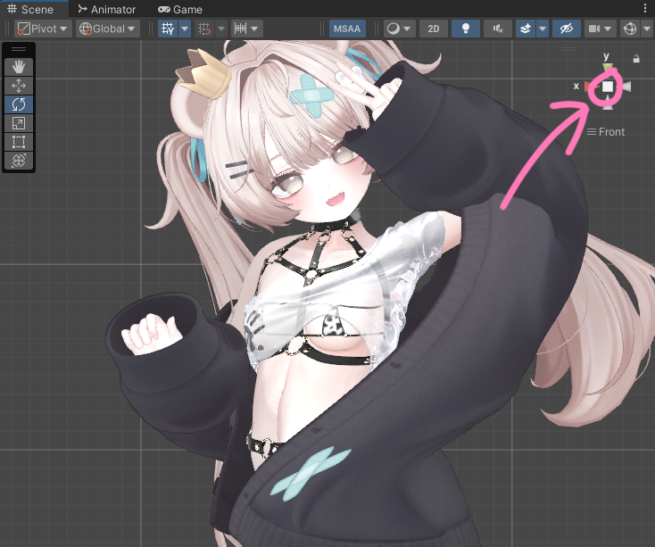
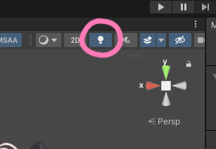

AO before / afterRTAO / GTAO
画面上の深度から接地感と隙間の陰影を補強する AO アルゴリズムです。


AO / BOUNCE LIGHT
lilSSRT は AO / ライティング拡張です。
AO は RTAO / GTAO と、GPU クラス別の品質プリセットを選択できます。
画面上の深度から接地感と隙間の陰影を補強する AO アルゴリズムです。


AO とは独立して、カメラ基準の疑似バウンスライトを追加できます。


/SYSTEM/SETUP
lilSSRT の基本導入手順です。
まずインポートして、マテリアル設定と AO 設定を行います。
lilSSRT は lilToon と Modular Avatar が導入済みのプロジェクトで使用してください。
lilSSRT.prefab は Modular Avatar のコンポーネントを使用しています。
lilSSRT*.unitypackage を Unity にインポートします。
対象マテリアルを右クリックし、Assets/lilSSRT/Convert material to lilSSRT を選択します。
Assets/MeltzzZ/lilSSRT/lilSSRT.prefab をアバター直下へ配置します。
マテリアル Inspector の lilSSRT Occlusion で AO を有効にし、Algorithm を選択します。
次は AO ページで Algorithm と負荷目安を確認します。通常は Quality で調整し、必要な場合のみ Advanced を開いて詳細を調整します。
目や白目に AO がかかって暗くなる場合は、Mask を使用して AO の適用範囲から外してください。
マスクは白い部分に AO が適用され、黒い部分には適用されません。必要に応じて Invert Mask と Mask Strength も調整できます。


/SYSTEM/AO_CONFIG
lilSSRT Occlusion は Inspector 上で Main / Mask / Algorithm / Advanced に分かれています。
まず Main と Algorithm を調整し、必要な場合だけ Advanced を開きます。
Quality は GPU クラス別の5段階プリセットです。Rays / Slices、Steps、評価方式をまとめて管理します。
通常は Auto のまま使用し、負荷を抑えたい場合は Quality を下げます。
Enable / Strength / Contrast / Radius / Debug / Color / Multi-Scale AO
GTAO は広い陰影、RTAO は接触影寄りです。
Quality / Evaluation / Vertex AO
AO の Color は、かけたいマテリアルの影色に合わせると、自然に入ります。
| GROUP | ITEM | NOTE | FPS COST |
|---|---|---|---|
| Main | Enable | AO の ON/OFF です。 | |
| Main | Strength | AO の強さです。 | |
| Main | Contrast | AO の濃淡差を調整します。 | |
| Main | Radius | 探索半径です。大きいほど広い影になります。 | |
| Main | Debug | Off / AO_Only / Depth / ScreenUV の確認表示です。 | |
| Main | Color | AO の色とアルファによる効き具合を調整します。 | |
| Mask | Mask | AO の適用範囲をテクスチャで制御します。 | |
| Mask | Invert Mask | マスクの白黒を反転します。 | |
| Mask | Mask Strength | 0 でマスクを無視し、1 でマスクを完全に適用します。 | |
| Algorithm | GTAO | 方向スライスを使い、広めで滑らかな陰影を作ります。 | |
| Algorithm | RTAO | スクリーン空間レイを使い、接触影寄りの陰影を作ります。 | |
| Algorithm | Quality | Low / Medium / High / Very High / ScreenShot の5段階です。GPU クラスの目安が Inspector に表示されます。 | |
| Algorithm | Evaluation | Auto / Vertex / Pixel から評価方式を選択します。Auto は Low～High で Vertex、Very High 以上で Pixel を使用します。 | |
| Algorithm | Vertex AO Phases | 1 Phase / 2 Phases を選択します。2 Phases は Low 以外の Vertex 評価時に使用されます。 | |
| Algorithm | Vertex AO Tessellation | Auto / Off / x2 / x3 から選択します。対応シェーダーの Vertex 評価時のみ有効です。 |
| GROUP | ITEM | NOTE | FPS COST |
|---|---|---|---|
| Multi-Scale | Multi-Scale AO | Near / Mid / Far の3段階で AO を調整します。有効時は品質プリセットの Steps が1.5倍になります。 | |
| Multi-Scale | Overall Strength / Radius | 全距離帯へ共通で掛かる強度と半径倍率です。 | |
| Near | Near Radius / Strength | 接触付近の AO 半径と強度を調整します。色は Main の Color を使用します。 | |
| Mid | Mid Radius / Strength / Color | 中距離 AO の半径・強度・色を個別に調整します。 | |
| Far | Far Radius / Strength / Color | 遠距離 AO の半径・強度・色を個別に調整します。 |
| GROUP | ITEM | NOTE | FPS COST |
|---|---|---|---|
| Sampling | Thickness | ヒット幅です。陰影の太さに影響します。 | |
| Sampling | Alpha Reduce | 透明度に応じて AO の影響を弱めます。 | |
| Sampling | Hit Resolve | Stable は安定寄り、Contact は接触影を強めます。 | |
| Depth | Depth Bias | 深度の自己干渉を避けるためのバイアスです。 | |
| Depth | Reference FOV | FOV 補正の基準になる視野角です。 | |
| Depth | FOV Scaling | カメラ FOV による半径の見え方を補正します。 | |
| Depth | Fade Start | 距離フェードの開始位置です。 | |
| Depth | Fade End | 距離フェードの終了位置です。 | |
| Noise | Direction Spread | サンプル方向の広がりを調整します。 | |
| Noise | Dither Amount | サンプルパターンを散らしてバンディングを抑えます。 | |
| Noise | Depth Filtering | 輪郭まわりの不要な影を抑えます。 | |
| Noise | Pattern Stability | ノイズ由来のチラつきを抑えます。 | |
| Noise | Contact Spread | 接触影を少し広げ、硬さを和らげます。 |
/SYSTEM/LIGHT
Fake Bounce Light は AO とは独立した簡易ライティングです。
強くしすぎると白飛びしやすいので、低めから調整してください。
| ITEM | WHAT IT DOES |
|---|---|
| Fake Bounce Light | 疑似バウンスライトの ON/OFF です。 |
| Prevent Blowout | 明るい部分の白飛びを抑えながらライトを足します。 |
| Strength | 効果の強さです。 |
| Blur | 方向色の境界をなだらかにします。 |
| Blend Mode | Add / Screen / Multiply / Replace / Color Boost から重ね方を選びます。 |
| Mask / Invert Mask | 効果範囲を制御します。 |
| Mask Strength | 0 でマスクを無視し、1 でマスクを完全に適用します。 |
| Color | 全体の色味を調整します。 |
| Directionality | 法線方向の指向性を調整します。上げるほど方向色がはっきり出ます。 |
| Normal Blend | 方向色同士の混ざりやすさを調整します。上げるほど境界が柔らかくなります。 |
/SYSTEM/Q_AND_A
一度既存の lilSSRT を削除してから、新しいバージョンをインポートしてください。
Assets/MeltzzZ/lilSSRT/lilSSRT.prefab をアバター直下へ設置してください。
Sceneビューが Orthographic のとき、AO は表示されません。右上のギズモ表示が Persp になっているか確認してください。
また、上部ツールバーの Light が無効の場合も AO は表示されません。Light アイコンを有効にしてください。


アニメーションで 1フレームにつき1台だけ描画され、描画解像度も 16x16 なので、見た目ほど負荷は大きくありません。
AO または Fake Bounce Light の見出し右側にあるメニューから Copy、Paste、Paste with Texture、Reset を使用できます。
まず Quality を下げます。さらに軽くしたい場合は Evaluation を Vertex にし、Multi-Scale AO を無効にしてください。
有効化すると品質プリセットの Steps が1.5倍になり、描画負荷が増加します。負荷が気になる場合は Quality を下げてください。
AO の Color と Fake Bounce の Strength / Directionality を下げ、Blend Mode や Normal Blend を見直してください。